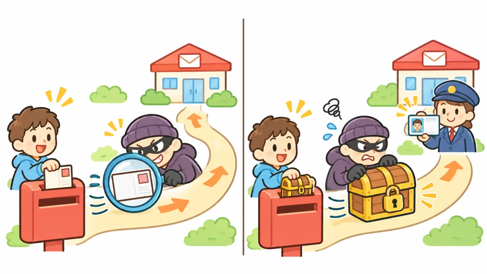
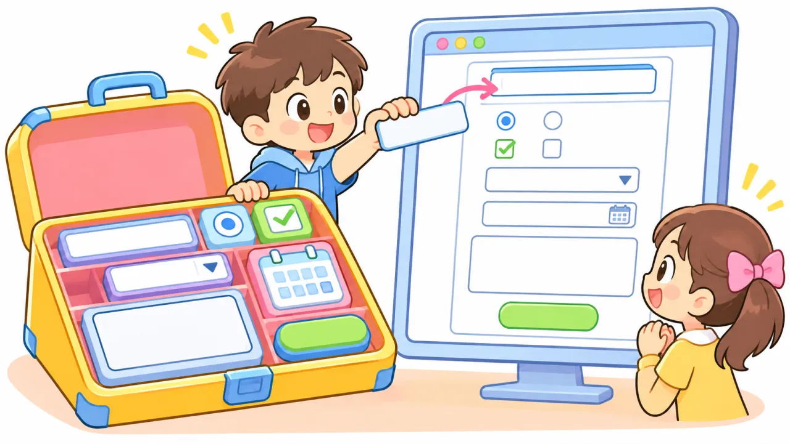

フォームのしくみと、お問い合わせフォームを作ろう ― 入力したデータはどこへ行く？（課題 03-form）
投稿日 2026年11月16日
このページでやること
① 入力したデータが画面からどうやって送られるのか（しくみ）
② URL の分解と、送るデータを守る HTTPS のしくみ
③ さまざまなフォーム部品（入力欄・選択肢・ボタン）
④ 標準的なお問い合わせフォームの書き方
⑤ GitHub に新しい課題（03-form）を作って提出する
1. フォームってなに？
フォームは、Web ページの中で利用者に何かを入力してもらい、それを送るためのしくみです。毎日のように使っています。
| 身近な例 | 入力するもの | 送った後 |
|---|---|---|
| 検索 | 調べたいことば | 検索結果のページが返ってくる |
| ログイン | メールアドレス・パスワード | 自分のページが開く |
| お問い合わせ | 名前・メール・質問 | 「送信しました」のページが出る |
| ネット通販の注文 | 住所・支払い方法 | 注文完了のページが出る |

2. 入力したデータは、どうやって送られる？
送信ボタンを押した瞬間、ブラウザの中ではこんなことが起きています。
送るために必要な3つの指定
| 書く場所 | 属性 | 意味 | たとえると |
|---|---|---|---|
<form> | action | 送り先（データを受け取るプログラムの URL） | 手紙の宛先 |
<form> | method | 送り方（get か post） | はがきで出すか、封筒で出すか |
| 各部品 | name | データの名前。受け取る側はこの名前で値を取り出す | 用紙の「項目名」 |
<form action="送り先の URL" method="post">
<input type="text" name="username"> ← name が無い部品は送られない！
<button type="submit">送信</button>
</form>name を書き忘れた部品は、入力しても送られません。画面ではちゃんと入力できるので気づきにくい、いちばん多いミスです。
GET と POST のちがい
| GET（ゲット） | POST（ポスト） | |
|---|---|---|
| データの載せ方 | URL の後ろに ?name=値&name=値 で付ける | URL には出さず、送る中身（本文）に入れる |
| たとえると | 📮 はがき（だれでも読める） | ✉️ 封筒（中身は見えない） |
| アドレスバー | 入力した内容が見える・ブックマークできる | 見えない |
| 使う場面 | 検索など、見られても困らないもの | お問い合わせ・ログイン・注文など |
たとえば Google 検索は GET です。下の欄に入れて「検索」を押すと、新しいタブのアドレスバーに ?q=入れたことば が付いているのが分かります。
送られる中身をのぞいてみよう
下のフォームに入力して「中身を見る」を押すと、本当に送信した時にブラウザが作る中身を表示します（実際にはどこにも送りません）。name が無い欄が送られないことも確かめてみましょう。
（「中身を見る」を押すと出ます）（「中身を見る」を押すと出ます）日本語が %E5%A4%A7… のような記号に変わるのは、URL や送る中身に使える文字が決まっているので、ブラウザが自動で安全な形に変換するからです（受け取る側で元の文字に戻します）。select は画面の文字（商品の質問）ではなく value の値（a）が送られる点にも注目しましょう。
3. URL を分解してみよう
GET で送ると、データは URL の後ろに付きました。そもそも URL は、いくつかの部品がつながってできた「住所」です。課題で作る thanks.html の URL を分解してみます。
| 部品 | 例 | 意味 | たとえると |
|---|---|---|---|
| スキーム | https:// | どのルールで通信するか | はがきで送るか、鍵付きの箱で送るか |
| ホスト名 | h-kondo.github.io | どのサーバーか。github.io の中の h-kondo さんの場所 | 建物の名前 |
| ポート番号 | :443（ふつうは省略） | サーバーの中のどの窓口か。https は 443、http は 80 | 建物の受付の番号 |
| パス | /ch03/03-form/thanks.html | サーバーの中のフォルダとファイル。自分の PC のフォルダ構成と同じ | 建物の中の部屋 |
| クエリ | ?name=oomoto&question=shop | ? から後ろ。name=値 を & でつないだもの。GET で送ったフォームのデータ | 部屋に届けるメモ |
| フラグメント | #top | ページの中のどの場所を表示するか。サーバーには送られない（ブラウザだけが使う） | 本の何ページ目か |
パスの /ch03/03-form/thanks.html は、自分の PC の ~/ch03/03-form/thanks.html とそっくりです。GitHub Pages は、リポジトリのフォルダ構成をそのまま URL のパスにして配っているからです。だから URL の最後が /03-form/ で終わる時は、その中の index.html が表示されます。
URL 分解ツール
好きな URL を貼って「分解する」を押すと、部品に分けて表示します。フォームを送った後の thanks.html の URL を貼ると、%E5… の暗号みたいな文字が元の日本語に戻るのが分かります。
| （「分解する」を押すと出ます） |
4. HTTPS ― 送るデータを守るしくみ
URL の最初の https は、HyperText Transfer Protocol Secure（安全な HTTP）の略です。最後の S（Secure＝安全）が付いているかどうかで、送るデータが途中で読まれるかどうかが変わります。

途中の人から、何が見える？
インターネットのデータは、自分のパソコンからサーバーまで、Wi-Fi のルーター・通信会社・いくつもの中継機を通って届きます。その途中で中身を見られるかどうかが、HTTP と HTTPS のちがいです。
HTTP（http://） | HTTPS（https://） | |
|---|---|---|
| 通信の中身 | そのまま（だれでも読める） | 暗号にして送る（TLS というしくみ） |
| 途中で書きかえ | できてしまう | できない（書きかえるとバレる） |
| 相手が本物か | 確かめられない | 証明書で確かめる |
| ポート番号 | 80 | 443 |
| ブラウザの表示 | 「保護されていない通信」と警告が出る | 警告なし |
HTTPS がつながるまで（ざっくり）
HTTPS のページを開くと、データを送る前に、ブラウザとサーバーの間でこんなやりとりが一瞬で行われています。
- こんにちは：ブラウザが「
itc-kondo.github.ioと HTTPS で話したい」と伝える - 身分証明書を見せる：サーバーが証明書を送る（「私は本物の github.io です」と、信頼できる発行元がハンコを押したもの）
- 本物か確かめる：ブラウザが、証明書の名前・有効期限・ハンコ（発行元）を確認する。にせものなら「この接続ではプライバシーが保護されません」と止める
- 合言葉を決める：ブラウザとサーバーだけが知っている暗号の鍵を作る（途中の人には分からない方法で）
- 暗号で会話：ここから先のデータ（ページ・フォームの中身）は全部この鍵で暗号にして送る
この授業資料のサイトの証明書を、本当に取り出してみました。
$ openssl s_client -connect itc-kondo.github.io:443 -servername itc-kondo.github.io \
| openssl x509 -noout -subject -issuer -dates
subject=CN=*.github.io ← だれの証明書？（github.io のすべてのサブドメイン）
issuer=C=US, O=Let's Encrypt, CN=YR1 ← だれがハンコを押した？（発行元）
notBefore=Sep 30 23:44:46 2026 GMT ← 有効期間の始まり
notAfter=Dec 29 23:44:45 2026 GMT ← 有効期間の終わり（約3か月ごとに自動で更新）
$ openssl s_client -connect itc-kondo.github.io:443 -servername itc-kondo.github.io \
| grep Protocol
Protocol : TLSv1.3 ← 暗号のしくみ（いちばん新しい版）*.github.io の * は「なんでも」という意味です。h-kondo.github.io も itc-kondo.github.io も、この1枚の証明書で守られています。GitHub Pages は、皆さんのサイトも何もしなくても HTTPS にしてくれます。
試しに http://（S なし）で開くと、GitHub が https:// に転送してくれます。
$ curl -sI http://itc-kondo.github.io/class-materials/
HTTP/1.1 301 Moved Permanently ← 「引っ越しました」
Location: https://itc-kondo.github.io/class-materials/ ← 「こっち（https）へどうぞ」フォームと HTTPS の大事な話
- フォームは必ず HTTPS のページに置く。HTTP のページで名前やパスワードを送ると、途中で丸見えになる（Chrome も警告を出す）
- HTTPS でも、GET のクエリは「通信の途中」では守られるが、ブラウザの履歴・サーバーの記録・URL を貼ったチャットには残る。だからパスワードやお問い合わせは POST にする
- 鍵マーク（HTTPS）は「通信が暗号になっている」という意味で、「安全なサイト」という意味ではない。にせサイト（フィッシング）も HTTPS で作れるので、URL のホスト名が本物かどうかを必ず見る
ホスト名のチェックは、URL を分解できると簡単です。たとえば https://github.io.example.com/login のホスト名は github.io.example.com で、本当は example.com の持ち物です。ホスト名は「:// の後ろから、次の / まで」を、右から読みましょう。
5. さまざまなフォーム部品

右の列は本物の部品です。さわって試してみましょう。
| 部品 | 書き方 | 見た目（さわれる） |
|---|---|---|
| 1行の文字 | <input type="text"> | |
| メールアドレス | <input type="email"> | スマホでは @ 付きのキーボードが出る |
| 電話番号 | <input type="tel"> | スマホでは数字のキーボードが出る |
| パスワード | <input type="password"> | 入力した文字が●で隠れる |
| 数 | <input type="number"> | |
| 日付 | <input type="date"> | |
| 1つだけ選ぶ | <input type="radio"> | 同じ name のものから1つだけ選べる |
| いくつでも選ぶ | <input type="checkbox"> | |
| リストから選ぶ | <select> と <option> | |
| 複数行の文字 | <textarea> | |
| 送信ボタン | <button type="submit"> | form の中で押すと送信される |
いっしょに使う大事な属性
| 書き方 | 意味 |
|---|---|
<label for="name"> と id="name" | 項目名と入力欄をセットにする。項目名を押しても入力欄が選ばれる（チェックボックスは押せる範囲が広がる）。読み上げソフトにも正しく伝わる |
placeholder="例：…" | 入力欄に薄く出る見本。⚠ 項目名の代わりにはしない（入力すると消える） |
required | 必須。空のまま送信しようとすると、ブラウザが止めて知らせてくれる |
value="…" | 送られる値。select の option・radio・checkbox では画面の文字ではなくこの値が送られる |
6. 標準的なお問い合わせフォーム
教科書のお問い合わせフォーム（03-18）を、本当に送れる形に直したものです。<form> で囲み、label・name・required を付けています。
↑ 見た目の見本です（このページでは送信しません）。コードは課題の STEP 2 にあります。
7. 課題：GitHub に新しい課題「03-form」を作って提出しよう
今までの ch03 リポジトリの中に、新しいフォルダ 03-form を足して作ります。リポジトリを新しく作る必要はありません。手順の基本は VS Code 手順書の「Git / GitHub と接続して課題を上げる」と同じです。
ch03/
├── index.html ← 課題へのリンク集（1行足す）
├── 03-18/
├── 03-19/
└── 03-form/ ← 今回の課題（新しく作る）
├── index.html ← お問い合わせフォーム
├── style.css
└── thanks.html ← 送信した後に表示するページSTEP 1. 新しいフォルダを作る
cd ~/ch03
mkdir 03-form
code .STEP 2. 3つのファイルを書く
<!DOCTYPE html>
<html lang="ja">
<head>
<meta charset="UTF-8">
<meta name="viewport" content="width=device-width, initial-scale=1">
<title>お問い合わせ</title>
<link rel="stylesheet" href="style.css">
</head>
<body>
<h1>お問い合わせ</h1>
<p>ご質問がありましたらお気軽にご連絡ください。</p>
<!-- action＝送り先 / method＝送り方 -->
<form action="thanks.html" method="get">
<label for="name">お名前</label>
<input id="name" type="text" name="name" placeholder="例：大本真奈美" required>
<label for="email">メールアドレス</label>
<input id="email" type="email" name="email" placeholder="例：example@mail.com" required>
<label for="question">ご質問内容</label>
<select id="question" name="question">
<option value="item">商品の質問</option>
<option value="shop">お店について</option>
<option value="other">その他</option>
</select>
<label for="message">ご意見・ご質問</label>
<textarea id="message" name="message"></textarea>
<label class="check">
<input type="checkbox" name="agree" value="yes" required> 個人情報の取り扱いに同意する
</label>
<button type="submit">送信する</button>
</form>
</body>
</html>body {
max-width: 600px;
margin: 40px auto;
padding: 0 16px;
font-family: sans-serif;
color: #333;
}
h1 {
padding-bottom: 8px;
border-bottom: 3px solid #2b7bb9;
}
/* 項目名は1行ずつ */
label {
display: block;
margin-bottom: 6px;
font-weight: bold;
}
/* 入力欄共通の装飾 */
input[type="text"],
input[type="email"],
select,
textarea {
width: 100%;
box-sizing: border-box; /* padding を含めて 100% にする */
padding: 12px;
border: 1px solid #ccc;
border-radius: 6px;
margin-bottom: 25px;
font-size: 16px;
}
textarea {
height: 150px;
}
/* 同意のチェックは太字にしない */
label.check {
font-weight: normal;
margin-bottom: 25px;
}
button {
display: block;
width: 100%;
padding: 14px;
border: none;
border-radius: 6px;
background: #2b7bb9;
color: #fff;
font-size: 16px;
font-weight: bold;
cursor: pointer;
}
button:hover {
opacity: 0.8;
}<!DOCTYPE html>
<html lang="ja">
<head>
<meta charset="UTF-8">
<meta name="viewport" content="width=device-width, initial-scale=1">
<title>送信ありがとうございました</title>
<link rel="stylesheet" href="style.css">
</head>
<body>
<h1>送信ありがとうございました</h1>
<p>アドレスバーの「?」より後ろを見てみよう。入力した内容が name=値 の形で届いています。</p>
<p><a href="index.html">フォームに戻る</a></p>
</body>
</html>今回は action="thanks.html" method="get" にしています。GitHub Pages は「ファイルを配るだけ」のホスティングで、送られたデータを受け取って保存したりメールしたりするプログラムを動かせません。そこで、送信先を自分の thanks.html にして、送られたデータがアドレスバーに付いて届く（GET）様子を観察します。本物のお問い合わせフォームでは、method="post" にして、受け取るプログラム（PHP など）やフォーム用のサービスに送ります。
STEP 3. まずはローカルで確認する
cd ~/ch03/03-form
open index.html- 何も入力せずに「送信する」を押す → ブラウザが「入力してください」と止めてくれるか（
requiredが効いているか） - メール欄に
abcと入れて送信 → 「@ を含めてください」と止めてくれるか（type="email"が効いているか） - 項目名（お名前 など）を押すと、入力欄が選ばれるか（
labelとidが合っているか） - 全部入れて送信 →
thanks.htmlが開き、アドレスバーの後ろに?name=…&email=…&question=item…が付いているか
STEP 4. トップのリンク集に1行足す
ch03/index.html の <ul> の中に追加します。
<li><a href="03-form/">03-form お問い合わせフォーム</a></li>STEP 5. GitHub に上げる
cd ~/ch03
git status # 03-form/ と index.html が変わっているか確認
git add .
git commit -m "Complete 03-form"
git push origin mainリポジトリの作成・git init・git remote add・Pages の設定はもうやってあるので不要です（ch03 を初めて上げる人は VS Code 手順書の STEP 1〜9 から）。
STEP 6. 公開ページで送信してみる
数分待ってから、公開ページを開いて送信してみます（h-kondo は自分のユーザー名に）。
https://h-kondo.github.io/ch03/03-form/公開ページのフォームに、本当の名前・メールアドレス・電話番号は入れないでください。GET はアドレスバー（URL）に入力内容がそのまま付くので、ブラウザの履歴などに残ります。練習用の例（「大本真奈美」「example@mail.com」など）で試しましょう。
STEP 7. 提出する
| 提出するもの | URL |
|---|---|
| GitHub URL（コード） | https://github.com/h-kondo/ch03/tree/main/03-form |
| GitHub Pages URL（完成画面） | https://h-kondo.github.io/ch03/03-form/ |
提出前のチェックリスト
<form action="thanks.html" method="get">で部品を囲んでいる- すべての入力部品に
nameが付いている（付け忘れた部品は送られない） - すべての
labelのforと、入力部品のidが同じ名前 - メールは
type="email"、必須の欄にrequired - 送信すると
thanks.htmlが開き、URL の後ろに入力内容が付いている - CSS が効いている（
<link rel="stylesheet" href="style.css">がある）
できた人は挑戦
- 「お問い合わせの種類」を
radio（ラジオボタン）で作ってみる（同じnameにすること） - 「希望の連絡方法」を
checkboxで複数選べるようにする - 電話番号の欄（
type="tel"）を足す method="get"をmethod="post"に変えて送信すると、thanks.htmlの URL はどうなる？（GitHub Pages では POST を受け取れないので、どうなるかも観察してみよう）
もっとできた人は挑戦：開発ツールで通信をのぞいて、JSON にしてみよう
ブラウザには、プロが毎日使う開発ツール（DevTools）が最初から入っています。これを使うと、送信ボタンを押した瞬間に何が・どこへ・どんな形で送られたかを自分の目で確かめられます。最後は、今のアプリが使っているデータの形「JSON（ジェイソン）」まで進みます。
A. 送信の中身を「ネットワーク」タブでのぞく
- 公開した自分のフォーム（
index.html）を開き、F12（または Ctrl+Shift+I）で開発ツールを開く - Network（ネットワーク）タブを選ぶ
- Preserve log（Firefox は歯車の中の Persist Logs）にチェック。ページが移っても記録が消えなくなる
- フォームに入力して送信する
- 一覧に出た
thanks.html?name=…の行をクリックして、次を確かめる- Headers：Request URL（送り先）、Request Method（
GET）、Status Code（200＝成功） - Payload（Firefox は Request）：送ったデータが「名前：値」で並んでいる。
%E5…も日本語に戻して見せてくれる
- Headers：Request URL（送り先）、Request Method（
3章で手で分解した URL の部品を、ブラウザが同じように分けて見せてくれているのが分かります。method="post" に変えて送ると、Payload の見え方がどう変わるかも見てみましょう。
B. JSON ってなに？
フォームは name=大本&question=shop のように & でつないで送りました。今の Web アプリやスマホアプリの多くは、データをJSON という形でやり取りしています。中身は同じで、書き方がちがうだけです。
| フォームの送り方（クエリ文字列） | JSON |
|---|---|
name=大本真奈美&question=shop&agree=yes |
|
{ } の中に "名前": 値 を , で並べるのがルールです。人が読んでも分かりやすく、JavaScript でそのまま扱えるので、ほとんどの API（プログラム同士の窓口）がこの形を使っています。
C. コンソールでフォームを JSON にする
自分のフォームを開いたまま、開発ツールの Console（コンソール）タブで次を実行します（入力欄に何か書いてから実行すると分かりやすい）。
const form = document.querySelector("form");
const data = Object.fromEntries(new FormData(form));
console.log(JSON.stringify(data, null, 2));new FormData(form)：フォームの中身を、送信する時と同じように集める（nameが無い部品は入らない＝name が大事な理由がここでも分かる）Object.fromEntries(…)：「名前と値の組」を JavaScript のオブジェクトにするJSON.stringify(data, null, 2)：オブジェクトを JSON の文字にする（2は字下げの幅）
貼り付けようとすると「allow pasting と入力して」と警告が出ることがあります。これは知らない人のコードを貼らせて、アカウントを乗っ取る詐欺を防ぐためのしくみです。自分で中身を理解したコードだけ、allow pasting と打ってから貼りましょう。「これをコンソールに貼って」と言われても、意味が分からないものは絶対に貼らないこと。
D. thanks.html に、受け取ったデータを JSON で表示する
thanks.html の </body> の直前に次を足して、push してから公開ページで送信してみましょう。
<h2>受け取ったデータ（JSON）</h2>
<pre id="json"></pre>
<script>
const params = new URLSearchParams(location.search); // URL の ? から後ろ
const data = Object.fromEntries(params);
document.getElementById("json").textContent = JSON.stringify(data, null, 2);
</script>URL のクエリを JavaScript で読み取って、JSON にして画面に出しています。%E5… も自動で日本語に戻ります。
チェックボックスで同じ name を複数送ると、この書き方では最後の1つしか残りません。全部残すには params.getAll("名前") を使います。どう直せばいいか考えてみよう。
E. 本物の API から JSON をもらう
GitHub は、ユーザーの情報を JSON で返す API を公開しています。ブラウザのアドレス欄に次を入れて開いてみましょう（itc-kondo を自分のユーザー名に変える）。
https://api.github.com/users/itc-kondo{
"login": "itc-kondo",
"html_url": "https://github.com/itc-kondo",
"type": "User",
"public_repos": 3,
"followers": 0,
"created_at": "2026-08-10T01:46:24Z",
...
}同じことを JavaScript からやると、こうなります（コンソールで実行）。
fetch("https://api.github.com/users/itc-kondo")
.then((res) => res.json())
.then((user) => {
console.log(user.login + " さんの公開リポジトリは " + user.public_repos + " 個");
});実行したら Network タブを見てみましょう。itc-kondo の行の Response に、JSON がそのまま届いているのが見えます。
- ⭐ さらに挑戦：
thanks.htmlで、フォームに入力した GitHub ユーザー名からfetchして、アイコン画像（avatar_url）と公開リポジトリ数を表示してみよう
X や YouTube を開いたまま Network タブを見ると、「いいね」やスクロールのたびに JSON が行き来しているのが分かります。フォームの「name と値を送る」と、アプリの「JSON を送る」は、形がちがうだけで同じことをしています。
8. クイズ
Q1. 入力欄に name を書き忘れると、どうなる？
画面では入力できるのに、送信したデータに入らない（送られない）。受け取る側は name で値を取り出すので、名前の無いデータは扱えないからです。
Q2. パスワードのフォームを GET で作ってはいけないのはなぜ？
GET は入力内容が URL（アドレスバー）に付くので、履歴や画面に残って見えてしまうから。ログインやお問い合わせは POST を使います。
Q3. <option value="item">商品の質問</option> を選んで送ると、何が送られる？
question=item。画面の文字ではなく value の値が送られます。
Q4. GitHub Pages に置いたフォームで、お問い合わせを本当に受け取れる？
受け取れません。GitHub Pages はファイルを配るだけで、データを受け取って保存・メールするプログラムを動かせないためです。本物にするには、PHP などが動くサーバーや、フォーム用のサービスを使います。
Q5. https://h-kondo.github.io/ch03/03-form/thanks.html?name=oomoto#top のうち、サーバーに送られないのはどこ？
#top（フラグメント）。ページの中のどこを表示するかを、ブラウザだけが使います。
Q6. 鍵マーク（HTTPS）が付いているサイトなら、パスワードを入れても安全？
そうとは限らない。HTTPS は「通信が暗号になっている」だけで、にせサイトも HTTPS で作れます。URL のホスト名が本物かを必ず確かめましょう。